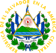
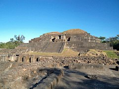
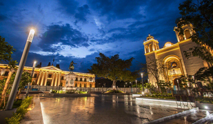

El Salvador
El Salvador, oficialmente República de El Salvador, es un país soberano de América Central ubicado en el litoral del océano Pacífico con una extensión territorial de 21 041 km².9 En el año 2019 contaba con una población estimada en 6 704 121 habitantes,10 siendo el país más densamente poblado del continente americano, sin incluir algunas islas en el mar Caribe. Su clima es cálido tropical pero debido al contraste geográfico el clima puede variar. El Salvador limita con Guatemala al oeste y con Honduras al norte y al este, al sureste el golfo de Fonseca lo separa de Nicaragua, y flanqueado al sur por el océano Pacífico. Su territorio está organizado en 14 departamentos, 35 distritos y 262 municipios.11La ciudad de San Salvador es la capital del país; su área metropolitana incluye 14 municipalidades cercanas, y concentra la actividad política y económica de la república. Las ciudades de Santa Ana y San Miguel son otros centros importantes del país. El actual territorio de El Salvador comprende lo que antes fuera la Alcaldía Mayor de Sonsonate y lo que fue la Intendencia de San Salvador que conformó la mayor parte del territorio. Ambas provincias adquirieron su independencia de España en 1821 junto a la Capitanía General de Guatemala y en 1824 se unieron para formar el «Estado del Salvador»,12 como parte de la República Federal de Centro América. En la época precolombina, existía un importante núcleo indígena conocido como el Señorío de Cuzcatlán (que en lengua náhuat significa ‘lugar de joyas’ o ‘lugar de collares’).13 Una guerra civil de 12 años, cuyo costo humano llegó aproximadamente a 75 000 vidas, finalizó el 16 de enero de 1992, cuando el gobierno y la guerrilla firmaron los acuerdos de paz que dieron lugar a reformas militares, sociales y políticas en el país.
El Salvador ha hecho grandes esfuerzos para promocionarse como destino turístico para 2014,
aproximadamente 1.36 millones de personas visitaron El Salvador, dejando en el país unos
822 millones de dólares.135
Para facilitar el turismo para extranjeros y nacionales el Ministerio de Turismo
ha propuesto diferentes rutas, las cuales son las siguientes:
Ruta Arqueológica

Joya de Cerén, San Andrés, Santa Ana, Chalchuapa, Tazumal, Casa Blanca.
Ruta Artesanal
Ilobasco, Suchitoto, San Sebastián, Cihuatán, Colima, La Palma, San Ignacio, El Pital, Las Pilas, Miramundo, Citalá, Iglesia del Pilar.
Ruta de La Paz
Perquín, Cacaopera, Arambala, Corinto, San Fernando.
Ruta de las Mil Cumbres
Bosque de Chaguantique, Bahía de Jiquilisco, Volcán de Tecapa y Laguna de Alegría, Berlín, Alegría.
Ruta Rural y Cultural
Concepción de Ataco, Nahuizalco, Ilobasco, La Palma San Sebastián, Cihuatán, Joya de Cerén, San Andrés, Santa Ana, Chalchuapa, Tazumal, Casa Blanca, Iglesia Santiago Apóstol, Suchitoto, Panchimalco.
Ruta Sol y Playa
Playas de El Salvador:
Zona Central: Playa el Palmarcito, El Sunzal, El Tunco, La Paz, San Diego, Costa del Sol y Estero de Jaltepeque, El Zonte.
Zona Occidental: Playa de la Barra de Santiago, Metalío, Los Cóbanos,
Zona Oriental: Bahía de Jiquilisco, Playa El Espino, El cuco, Las Flores, Las Tunas, Torola, Playas Negras, El Tamarindo y el Golfo de Fonseca.
Ruta de Las Flores
Salcoatitán, Nahuizalco, Juayúa, Apaneca, Ahuachapán y Concepción de Ataco.
Ruta de Los Volcanes
Cerro Verde, Izalco y Santa Ana.
